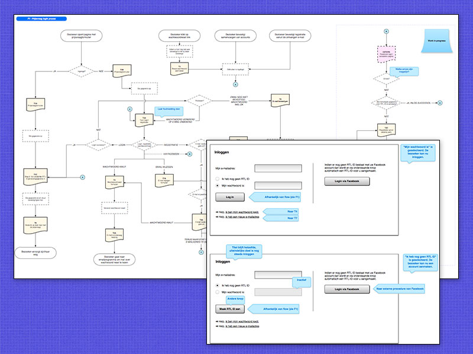

De wens van RTL was het totaal opschonen en verbeteren van de inlogstructuur voor diverse onderdelen binnen het RTL merk. Diverse programma's en subonderdelen van de website hadden een eigen inlogmechanisme. Dat is overgegaan op één uniforme login met de naam "RTL ID".
Mijn taak in het geheel was de complete nieuwe structuur uit te werken met alle uitzonderingen erop en eraan. Dit heeft geresulteerd in een uiterst gedetailleerd interactie-ontwerp met de complete login flow met RTL ID als oAuth aanbieder zoals Facebook en Twitter dat bijvoorbeeld ook zijn.
De structuur van RTL-ID is verweven in diverse processen en sites binnen het rtl.nl domein.

{% endblock %}